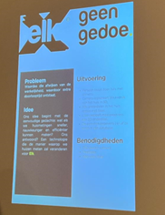

Smart Business
Workshop 1, Aug 30, 2023
Tijdens de eerste workshop Smart Business op woensdag 30 augustus hebben we de give & take van iedereen zichtbaar gemaakt. Ik geef vooral business (HBO studie Food & Business) en zal meer nemen op het gebied van techniek (middelbare school niveau 3D-printen, robotica en informatica).

Ook zijn we bezig geweest met het maken van een persona profile (zie foto hierboven):
- Wat moet deze minor je geven? Technische kennis, netwerk, handvaten voor toekomst.
- Hoe wil je dat bereiken? Zo veel als mogelijk actief aanwezig zijn bij alle bijeenkomsten, fouten maken > leer je het meeste van na reflectie, vragen stellen.
- Waarom zou je het willen veranderen? Smart industry is wat mij betreft de toekomst.
- Hoe definieer je succes? Het gewenste resultaat behalen voor de opdrachtgever door gedegen onderzoek uit te voeren en op persoonlijk vlak gegroeid te zijn.
- Definieer persoonlijke groei Leren loslaten.
- Hoe wil je het meten? Logboek bijhouden, feedback vragen.
- Welke dingen kunnen succes in de weg staan? 1. Ikzelf; mijn lage zelfbeeld, weinig zelfvertrouwen, negatief denken, gezondheid. 2. Slechte samenwerking (groep en begeleider); 3. Weinig technische kennis.
- Hoe ga je voorkomen dat dit het succes in de weg staat? 1. Betrokken zijn en initiatief tonen; 2. Duidelijk communiceren; 3. Feedback vragen; 4. Tegenover negatieve gedachte een positieve gedachte zetten.
De value map die daarbij hoort:
- Hoe ziet jouw ideale minortraject eruit? Geen stress, veel plezier, gezellige klas die er voor elkaar is, soepel proces om tot een mooi eindproduct te komen, uitbreiding van netwerk, goede stagebegeleider, leuke hardwerkende initiatief tonende respecterende projectgroep, leren omgaan met Arduino, middelbare schoolkennis van programmeren en 3D-printen verder uitbreiden.
- Welke persoonlijke activa kun je inzetten? Creativiteit, behulpzaamheid, betrouwbaarheid, hardwerkend, doorzettingsvermogen en geordend/gestructureerd werken.
- Wat heb je nodig om de barrières weg te nemen? Veilige en goede werkomgeving, vrijheid, feedback (zelfvertrouwen), goede en heldere communicatie, stevige technische basis vanuit de workshops.
Workshop 2, Sept 20, 2023
Tijdens de 2e Smart Business workshop op woensdag 20 september was Geert Rensen van Be Informed op bezoek om ons aan de hand van de AXA verzekeringscasus meer te leren over het Business Model Canvas. Samen met Daan en Ezra heb ik deze ingevuld (zie foto hieronder) en samen met Ezra heb ik deze gepitcht (zie slides onderaan). Het BMC heb ik tijdens mijn opleiding gehad, dus het was leuk om deze kennis te delen met Ezra en Daan.
- Belangrijkste partners: agentennetwerk, schadeherstel bedrijven
- Kernactiviteiten: verkopen verzekeringen, risicomanagement
- Kernmiddelen: data
- Waardepropositie: dekking van schade, zekerheid
- Klantrelaties: indirect via agentnetwerk
- Kanalen: agentnetwerk
- Klantsegmenten: zakelijk, automobilisten, particulier
- Kostenstructuur: loon, schadevergoeding, software onderhoud, huisvesting
- Inkomstenstromen: premie, beleggingen, rente
Workshop 3, Sept 27, 2023
Woensdag 27 september zijn we op bedrijfsbezoek bij Elk geweest (zie foto’s hieronder).
Ik heb mijzelf hierop voorbereidt door van te voren alvast een kijkje te nemen op de website. Allereerst hebben we een quiz gespeeld om de kennis van Lean&Lean te testen, vervolgens kregen we een bedrijfspresentatie om een beter beeld te krijgen van Elk. Daarna mochten we een kijkje in de keuken nemen en heeft Edwin de helft van de klas, waaronder ik, een rondleiding gegeven (zie foto hieronder).
Toen was het tijd om een pitch voor te bereiden en te lunchen. Aan het einde van de dag hebben we de pitch gehouden voor Edwin en Betty (zie foto’s hieronder).
De pitch heb ik gehouden met Bram, Lea, Frank, Tom, Remco (deze deed opeens niet mee met de pitch).Ik vond het een mooi bedrijf, maar wel verrassend dat er nog zo weinig gedigitaliseerd was binnen het bedrijf en dat ze aan de werkvoorbereider soms zelfs handgeschreven papiertjes met gemeten maten geven.
Workshop 4, Okt 6, 2023
Ter voorbereiding op deze workshop hebben Hieke, Tomas en ik samen een BMC voor Giesbers gemaakt:
Op vrijdag 6 oktober heeft Paul Kalis een gastcollege/interactieve sessie over operational excellence voor ons verzorgd.


Belangrijke dingen die hij verteld heeft:
- Een probleem wordt zelden opgelost binnen het kader waarin het geschapen is. (als je doet wat je deed, krijg je wat je deed) > out of the box denken;
- Kennis is macht, maar voorstellingsvermogen is krachtiger dan kennis (hulpmiddel om out of the box te denken).
Voor ons project is het belangrijk om over het volgende na te denken: als Giesbers chips gaan gebruiken in kozijnen, wat betekent dat voor het BMC:
- Belangrijke key partner: Van de Vin
- Key resources: kozijnen met chips, technisch opgeleid personeel
- Key activities: scannen kozijnen
- Kosten: systeem aanpassen (development, ontwikkelingsfases)
- Value proposition: nog meer klantgericht te werk kunnen gaan
- Revenue stream: minder verspilling, snellere doorlooptijden
Complex adaptive systems (CAS) > zelfsturend system:
- Spreeuwenzwerm prachtig voorbeeld hiervan: 1 spreeuw kijkt naar 7 andere en bepaalt zijn gedrag > net zo in bedrijfsleven
- Visschool > als het zo verstoord wordt dat structuur verbroken wordt ontstaat er chaos; haai is je innovatie (bewust van zijn dat het ook een bedreiging is, de succesvolle organisatie > langzaam innovatie inbrengen > belangrijk om je daar bewust van te zijn)
- Menselijk lichaam > heel goed weten hoe het in elkaar steekt > operating model: business model canvas valt uiteen in value proposition en value realisation > value realisation op te delen in 3 driehoeken TOM3 > bepalen in welk vlak je innovatie afspeelt (TOM3 is eigenlijk de uitvoering van het BMC > operationeel, finance etc. staat in information & reporting)
Tijdens de workshop hebben we ook uitleg gekregen over het TOM model en hebben we deze ingevuld voor Giesbers (zie foto hieronder).
Tips:
- Model van treacy en wiersema > kijken waar Giesbers de nadruk op legt
- Kijk naar value chain > wat kan je daar verbeteren > wat betekent dat voor alle vlakken > is het te doen?
- Keep it simple > op dit vlak wil ik deze aanpassing doorvoeren
- Kanban board invullen om het in te voeren in de praktijk
Workshop 5, Okt 11, 2023
Woensdag 11 oktober heeft Yvonne Peterman ons begeleidt samen met Mariëlle tijdens het spelen van een managementgame. Hiervoor kreeg de klas rollen toegewezen om te leren om te gaan met weerstand en samen tot een oplossing te komen. Van Mariëlle kreeg ik nog een compliment dat ik een professioneel gesprek gevoerd heb met Sander (directie). Ik heb er van geleerd dat ik mijn grenzen aan mag geven en niet te veel naar hiërarchie moet kijken binnen een bedrijf.